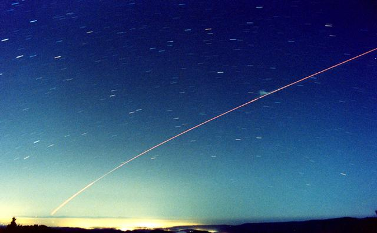

The photo was taken near Castle Rock State Park on Skyline Blvd. above Saratoga. The lights of Santa Cruz appear in the foreground through some thin fog. A last-quarter Moon provided the extra illumination. Near the launch point, the red light of Mt. Toro near Salinas appears. The trajectory goes through the stars of Eridanus and Fornax. Note the 2nd-stage burnout and 3rd-stage ignition point accentuated by a "puff" of smoke that the moonlight illuminated.
The photo was taken with a Tokina 28-85mm zoom set at 28mm at f3.5 on 800-speed Kodak MAX negative film for about a 4 minute exposure for those of you keeping track!